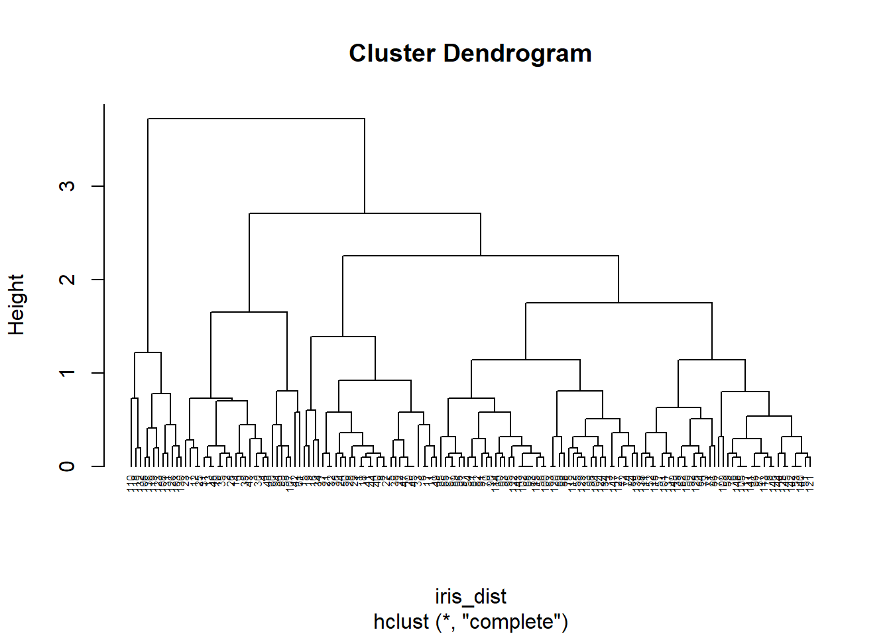
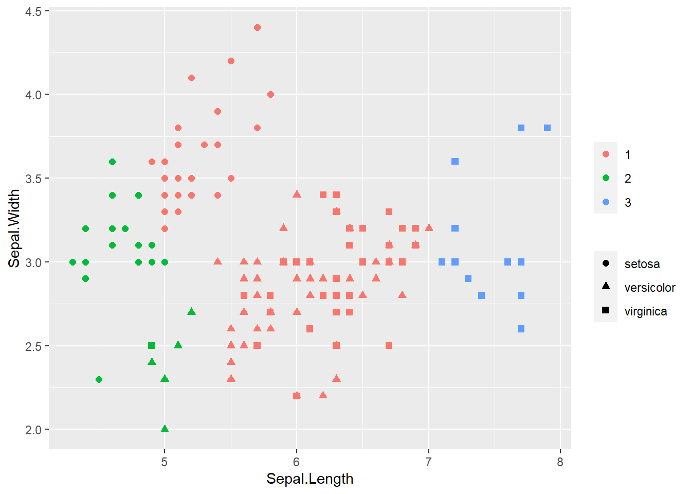
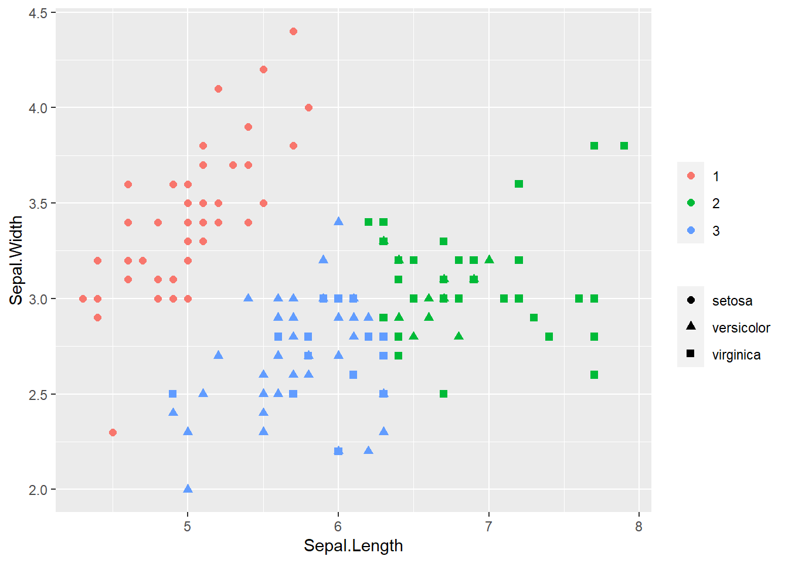
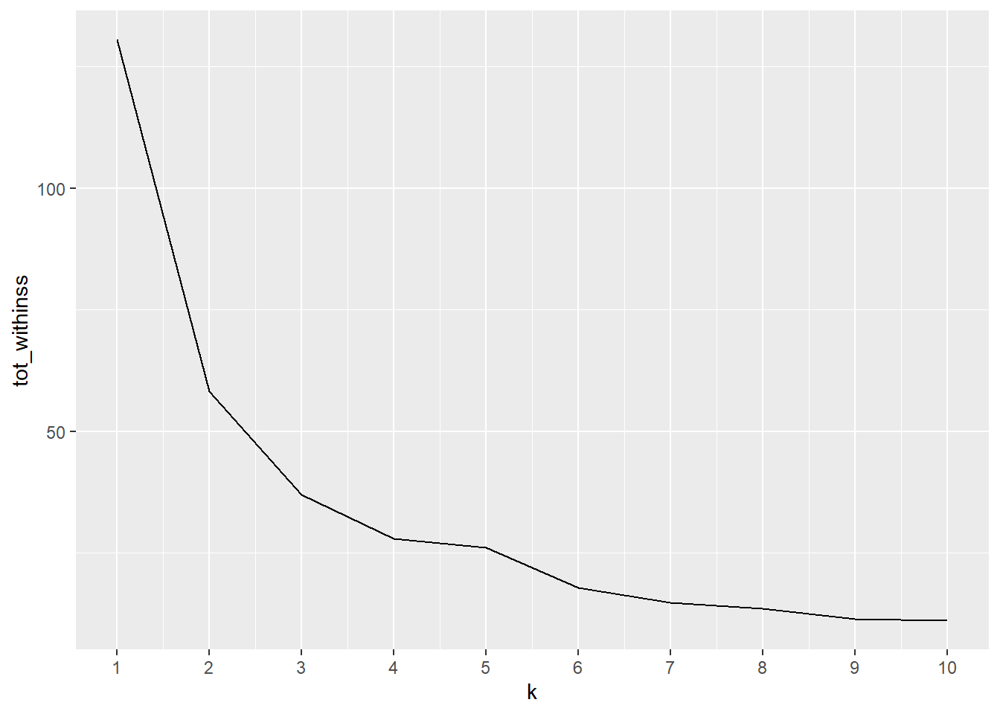
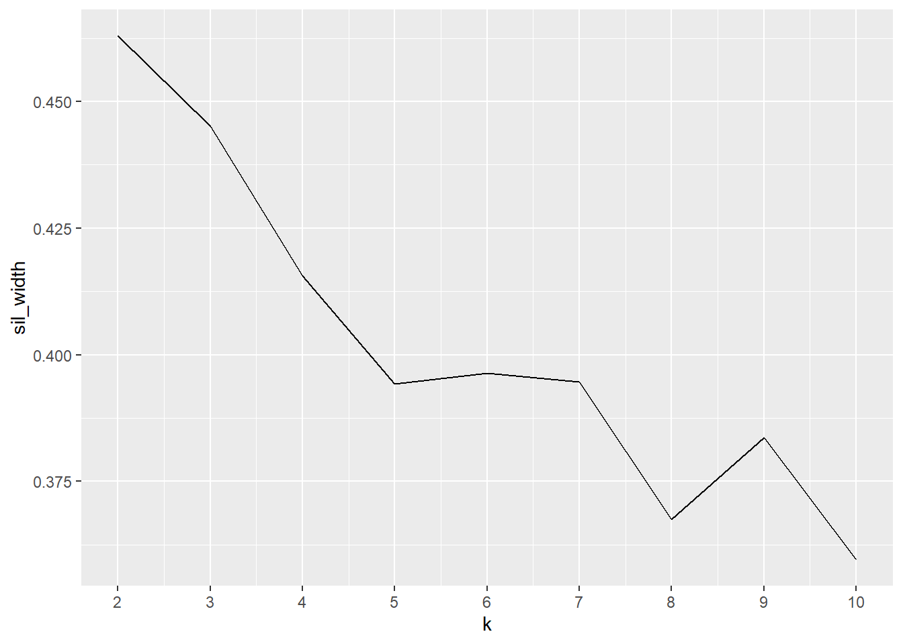
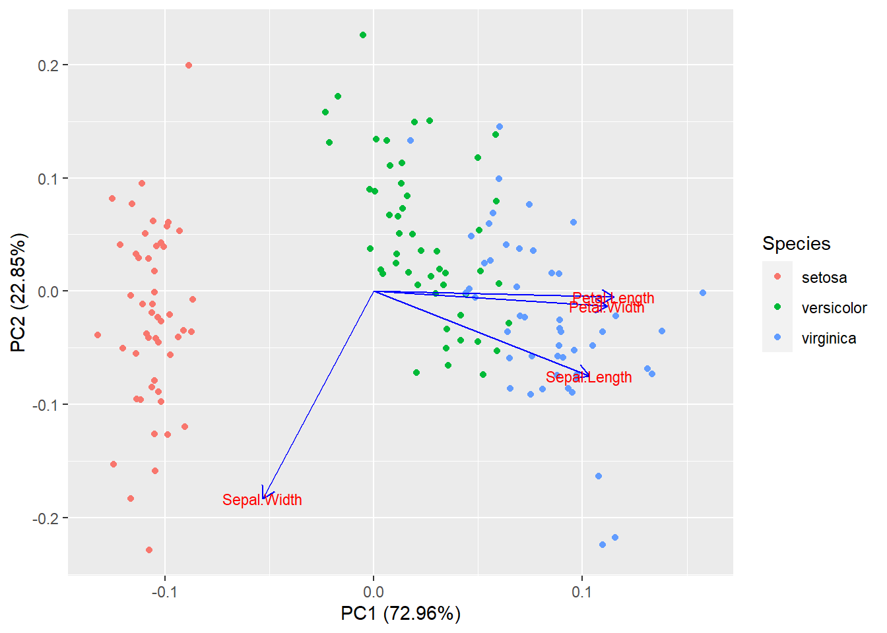
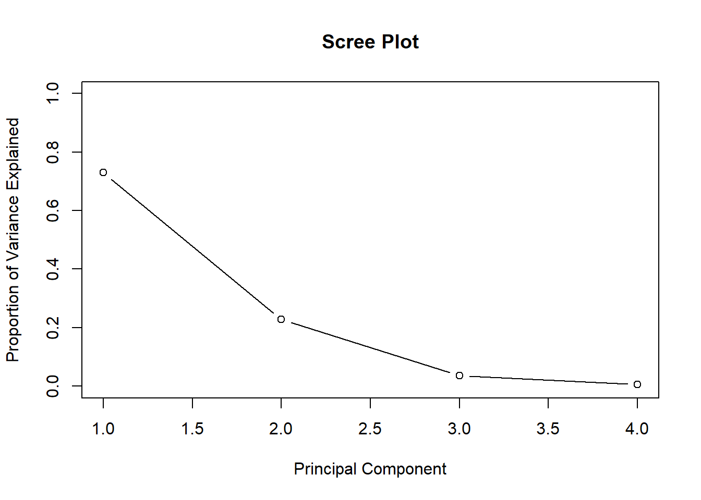
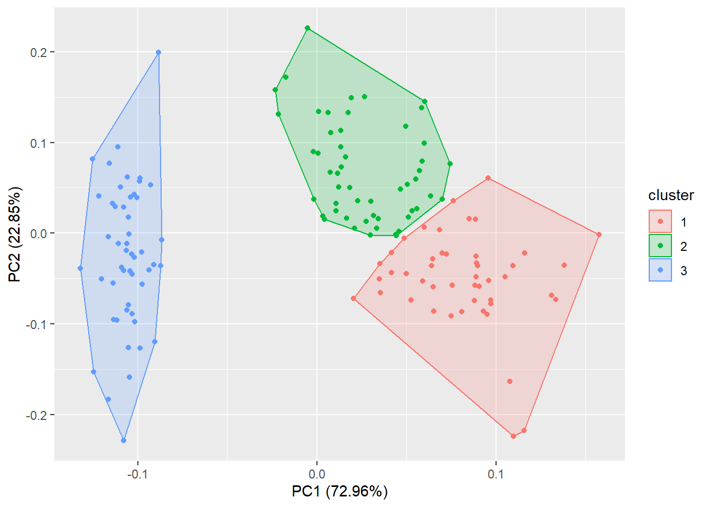

Clustering looks for observations that are similar to one another and groups them together. It’s an unsupervised technique i.e. there aren’t defined/known groups. It is import to scale the data before analysis. There are different ways to calculate distance between observations, and methods to determine how many groups to have.
Consider 3 points on a grid: (1,4), (3,2), (7,8) and calculate the distance between them
points = data.frame(x=c(1,3,7), y=c(4,2,8))
dist(points) #defaults to euclidean## 1 2
## 2 2.828427
## 3 7.211103 7.211103dist(points, method="manhattan")## 1 2
## 2 4
## 3 10 10Consider calculating the distance between 3 height (inches) and weight (pounds) pairs.
height_weight = data.frame(height = c(65, 68, 60), weight = c(140, 175, 115))
dist(height_weight)## 1 2
## 2 35.12834
## 3 25.49510 60.53098Now scale (normalize) the height and weight pairs to be centered at 0 with standard deviation 1 and calculate distance
height_weight_scaled = scale(height_weight)
dist(height_weight_scaled)## 1 2
## 2 1.378276
## 3 1.489525 2.807431With the unscaled data, observations 1 and 3 are the closest, while with the scaled data observations 1 and 2 are the closest.
First convert to dummy variables
college_gender = data.frame(college = as.factor(c('ASC', 'ASC', 'BUS', 'BUS', 'BUS', 'ENG')), gender = as.factor(c('female','male','male','male','female','male')))
#install.packages('dummies')
library(dummies)
college_gender_dummy = dummy.data.frame(college_gender)
print(college_gender)## college gender
## 1 ASC female
## 2 ASC male
## 3 BUS male
## 4 BUS male
## 5 BUS female
## 6 ENG maleprint(college_gender_dummy)## collegeASC collegeBUS collegeENG genderfemale gendermale
## 1 1 0 0 1 0
## 2 1 0 0 0 1
## 3 0 1 0 0 1
## 4 0 1 0 0 1
## 5 0 1 0 1 0
## 6 0 0 1 0 1This is just one example of creating dummy variables in R
Then calculate distance
dist(college_gender_dummy, method='binary')## 1 2 3 4 5
## 2 0.6666667
## 3 1.0000000 0.6666667
## 4 1.0000000 0.6666667 0.0000000
## 5 0.6666667 1.0000000 0.6666667 0.6666667
## 6 1.0000000 0.6666667 0.6666667 0.6666667 1.0000000Some popular clustering techniques are: Hierarchical, K-means, Partition Around Medoids (PAM), and Principal Component Analysis (PCA)
Generally agglomerative (“bottom-up”): each observation starts in its own cluster, and pairs of clusters are merged as one moves up the hierarchy
Alternatively divisive (“top-down”): all observations start in one cluster, and splits are performed recursively as one moves down the hierarchy
Linkage determines the distance between sets of observations as a function of the pairwise distances between observations
Complete/single/average = \(max/min/mean \{d(a,b) : a \in A, b \in B\}\)
head(iris)## Sepal.Length Sepal.Width Petal.Length Petal.Width Species
## 1 5.1 3.5 1.4 0.2 setosa
## 2 4.9 3.0 1.4 0.2 setosa
## 3 4.7 3.2 1.3 0.2 setosa
## 4 4.6 3.1 1.5 0.2 setosa
## 5 5.0 3.6 1.4 0.2 setosa
## 6 5.4 3.9 1.7 0.4 setosairis_dist = dist(iris[,1:2]) #defaults to euclidean distance
clusters = hclust(iris_dist) #defaults to complete linkage
plot(clusters, hang=-1, cex=0.5)
iris$cluster = cutree(clusters,k=3)
library(ggplot2)
ggplot(iris, aes(Sepal.Length, Sepal.Width, color=as.factor(cluster), shape=Species)) + geom_point(size=2) + theme(legend.title = element_blank())
Here we knew there were 3 species of flower, so it was easy to choose the number of clusters (k). We could alternatively cut at a height by specifying h in cutree. With complete linkage this tells us the maximum distance to all other members in a cluster is less than h
model_km = kmeans(iris[,1:2], centers=3)
iris$cluster = model_km$cluster
library(ggplot2)
ggplot(iris, aes(Sepal.Length, Sepal.Width, color=as.factor(cluster), shape=Species)) + geom_point(size=2) + theme(legend.title = element_blank())
Run many models with varying value of k, calculate total within-cluster sum of squares, find where ‘elbow’ occurs to determine optimal k to use
library(purrr)
# Use map_dbl to run many models with varying value of k (centers)
tot_withinss <- map_dbl(1:10, function(k){
model <- kmeans(x = iris[,1:2], centers = k)
model$tot.withinss
})
# Generate a data frame containing both k and tot_withinss
elbow_df <- data.frame(
k = 1:10,
tot_withinss = tot_withinss
)
# Plot the elbow plot
ggplot(elbow_df, aes(x = k, y = tot_withinss)) +
geom_line() +
scale_x_continuous(breaks = 1:10)
Calculate how similar each observation is with the cluster it’s assigned relative to other clusters. Ranges from -1 (observations may be assigned to the wrong cluster) to 1 (observation is well matched to the assigned cluster). A value of 0 suggests the observation is borderline matched between two clusters
library(cluster)
# Use map_dbl to run many models with varying value of k
sil_width = map_dbl(2:10, function(k){
model = kmeans(x = iris[,1:2], centers = k)
ss = silhouette(model$cluster, dist(iris[,1:2]))
mean(ss[,3]) #sil_width
})
# Generate a data frame containing both k and sil_width
sil_df = data.frame(
k = 2:10,
sil_width = sil_width
)
# Plot the relationship between k and sil_width
ggplot(sil_df, aes(x = k, y = sil_width)) +
geom_line() +
scale_x_continuous(breaks = 2:10)
K=2 has the largest silhouette score, indicating we should use 2 clusters (though recall we know there are actually 3 species).
PCA finds structure in features and aids in visualization
Same as eigenvalue decomposition of \(X^TX\) (covariance matrix - estimates how each variable relates to another, may differ by a constant) and singular value decomposition of \(X\) (note the right singular vectors of \(X\) are the eigenvectors of \(X^TX\).
Important to scale/normalize data first, especially if input variables use different units of measurement or the input variables have significantly different variances. It seems the general consensus is to center the data as well.
PCA function
rm(iris)
pca.iris = prcomp(x=iris[-5], scale=T, center=T)
summary(pca.iris)## Importance of components:
## PC1 PC2 PC3 PC4
## Standard deviation 1.7084 0.9560 0.38309 0.14393
## Proportion of Variance 0.7296 0.2285 0.03669 0.00518
## Cumulative Proportion 0.7296 0.9581 0.99482 1.00000The first two principal components account for over 95% of the variance.
Which predictors contribute to which principal components
pca.iris$rotation## PC1 PC2 PC3 PC4
## Sepal.Length 0.5210659 -0.37741762 0.7195664 0.2612863
## Sepal.Width -0.2693474 -0.92329566 -0.2443818 -0.1235096
## Petal.Length 0.5804131 -0.02449161 -0.1421264 -0.8014492
## Petal.Width 0.5648565 -0.06694199 -0.6342727 0.5235971Sepal.Width has little contribution to PC1 but almost all of PC2
Visualizing first two components
library(ggfortify)
autoplot(pca.iris, data=iris, colour='Species', loadings = TRUE, loadings.colour = 'blue', loadings.label = TRUE, loadings.label.size = 3)## Warning: `select_()` is deprecated as of dplyr 0.7.0.
## Please use `select()` instead.
## This warning is displayed once every 8 hours.
## Call `lifecycle::last_warnings()` to see where this warning was generated.
Petal.Width and Petal.Length are in the same direction indicated they are correlated in the original data
Plot how much variation each principal component explains:
pca.iris.var = pca.iris$sdev^2
pve = pca.iris.var/sum(pca.iris.var) #proportion of variance explained
plot(pve, xlab = 'Principal Component', ylab = 'Proportion of Variance Explained', main='Scree Plot', ylim=c(0,1), type="b")
Perform K-Means clustering on the first two components. This differs from the previous k-means example because we now consider all 4 data columns for clustering (by consider the principal components) instead of just using the first 2 data columns. Plot data using first two components
library(ggfortify)
iris_scaled = scale(iris[,-5]) #Scale data first for PCA
iris_scaled = cbind(iris_scaled, iris[,5])
autoplot(kmeans(iris_scaled[,-5],3), data=iris_scaled, frame=T)## Warning: `group_by_()` is deprecated as of dplyr 0.7.0.
## Please use `group_by()` instead.
## See vignette('programming') for more help
## This warning is displayed once every 8 hours.
## Call `lifecycle::last_warnings()` to see where this warning was generated.